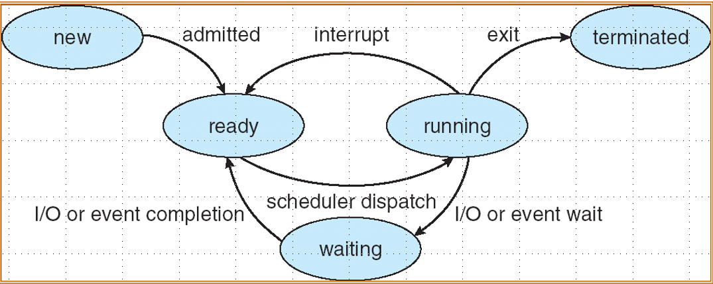
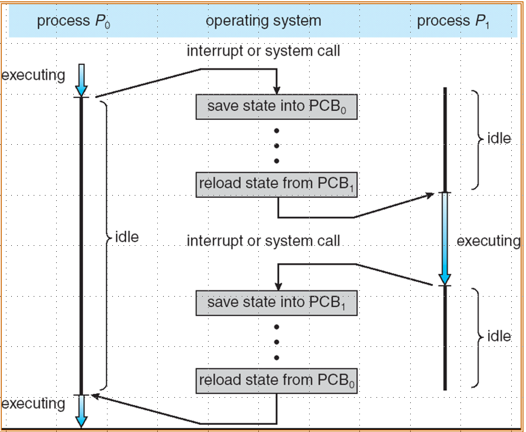
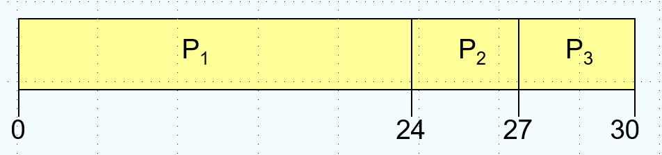
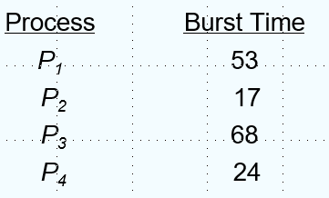

进程
约 3418 个字 27 行代码 14 张图片 预计阅读时间 12 分钟
进程调度
定义
操作系统会执行一系列的任务，对于批处理(batch)系统是一系列的任务在CPU上执行，对于Time-Sharing 的系统，多个用户的程序在CPU上执行。

这里的栈和堆不是数据结构的栈和堆，只是指一段特定地址空间
进程就是执行中的程序，包括：
- text section(code)
- data section(global varibles)
- stack(function parameters, local varibles, return addresses)
- heap(dynamically allocated memory)
- program counter
执行状态
进程一共有5种状态：
- new：进程被创建
- ready：进程被加载进内存，等到执行
- running：进程正在执行
- wating：进程主动退出执行，比如等待IO
- terminated：进程被结束

这里 interrupt 和 进入 waiting 的区别是前者是被动的，后者是主动的。
进程有属于自己的上下文信息（主要是寄存器），在切换进程时需要保存，使用 Process Control Block(PCB)保存。然后是很经典的切换上下文的流程，先保存当前进程的PCB，再取出待切换进程的PCB，即切换到了对应进程，这个过程是有开销的。

进程调度
使用队列来管理调度的信息，队列分为：
- Job queue：系统中的所有进程
- Ready queue：主存中的所有进程
- Device queue：等待IO的进程
需要一个程序来调度进程，这个程序就被称作调度器(scheduler)，有长期的调度器（选择哪个进程到主存，即到ready queue）和短期的调度器（选择哪个进程到CPU）。现在的计算机其实不太需要长期调度器，比如Windows和Linux就都没有。短期的调度器会频繁被使用，长期调度器偶尔被使用，长期调度器控制了 multiprogramming 的程度。
进程可以被描述为 CPU bound process和 IO bound process，即看CPU和IO谁的时间开销更大。
进程创建
父进程创建子进程，然后继续创建其它进程，进程最后构成了一个树状结构。父子进程会涉及到：
资源共享：
- 父进程和子进程共享所有资源
- 子进程占有父进程的一部分资源
- 父子不共享资源
执行：
- 父子进程并发执行
- 父进程等待子进程结束
地址空间：
- 子进程复制父进程
- 子进程加载一个新的程序
在 unix 系统中fork会创建一个新进程，exec能够用新的程序替换原本的内存空间。
下面是一个Linux中fork的例子，子进程拷贝了一份父进程的地址空间，然后父进程等待了子进程的结束。
int main()
{
pid_t pid;
/* fork another process */
pid = fork();
if (pid < 0) { /* error occurred */
fprintf(stderr, "Fork Failed");
exit(-1);
}
else if (pid == 0) { /* child process */
execlp("/bin/ls", "ls", NULL);
}
else { /* parent process */
/* parent will wait for the child to complete */
wait (NULL);
printf ("Child Complete");
exit(0);
}
}
进程终结
进程执行了最后一条指令会让操作系统删除它，输出的数据会从子进程传到父进程（通过wait），进程的资源会被操作系统回收，父进程可以结束子进程(abort)，因为子进程超出了分配的资源或者任务不再被需要。如果父进程被结束，一些系统也不会允许其子进程存在，会引发级联删除，不过在有些系统子进程会被绑定到 init 进程上。
协同进程
Independent process 不会影响或被其它进程影响，而 cooperating process 可以，然后就引出了经典的生产者-消费者问题(producer-consumer problem)，生产者进程能够产生供消费者消费的信息，我们有一个 buffer 来暂存这些信息：
- unbounded buffer：没有边界的 buffer，如果没有 item，消费者需要等待
- bounded buffer：有边界的 buffer，如果buffer满了，生产者必须等待
我们用一个循环队列来表示 buffer（这里是有界的）,in 是队尾， out 是队首
#define BUFFER_SIZE 10
typedef struct {
. . .
} item;
item buffer[BUFFER_SIZE];
int in = 0;
int out = 0;
所以队列满了可以表示为 (in + 1) % BUFFER_SIZE == out，队列空了可以表示为 in == out
进程间通信
Interprocess Communication(IPC)有两种模型：
- message passing，可以send(message)和recive(message)
- shared memory，两个进程可以向同一段存储读写

直接交流
直接交流，需要显式声明对方的名称，比如：
send(P,message)：发一个消息给进程Preceive(Q,message)：接收一个来自进程Q的消息
communication link 的性质：
- 连接时自动建立的
- 一个链接绑定到一对通信进程
- 每一对通信进程存在一个链接
- 链接可以是单向是，但通常是双向的
非直接交流
非直接交流中消息还是定向的，但是是在 mailbox(port) 接收，每个信箱有自己的id，进程间只有在它们共享邮箱时可以通信。
链接的性质：
- 链接只会在进程共享公共邮箱的情况下建立
- 一个链接可能被绑定到多个进程上
- 一对进程之间可能有多个链接
- 可以是单向的，也可以是双向的
涉及到的操作有：
- 创建一个新信箱
- 通过邮箱发送和接收消息
- 销毁一个邮箱
原语定义为：
send(A, message)：发送一个消息到 mailbox Areceive(A, message)：从 mailbox A 接收一个消息
同步
message passing 有可能是 blocking 或者 non-blocking的，blocking是synchronous，发消息者要等到消息被接收，接收者也要等到有消息；non-blocking是asynchronous，发送者发完就可以继续执行其它任务，接收者可以收到有效的或者空的消息。
buffering
绑定给链接的消息队列，以以下三种方法实现：
- zero capacity
- bounded capacity
- unbounded capacity
线程
简介
为了提高系统响应性，需要将操作分的尽可能小，但是为了高效的执行，代码应该较大块地执行，更准确地说，我们希望能够调度更小的操作，这些枯燥的工作可以留给OS去完成，这就是线程。线程可以理解成更轻量级的进程，进程是资源分配的最小单位，而线程是调度的基本单位。

线程可以共享进程的部分资源，包括代码、数据和文件等，但每个线程都有自己的寄存器和栈，栈本质是同一个，但是不同线程的sp指针的位置不同，只要找到地址就可以把值取出。
线程管理
用户线程的管理由用户态线程库完成，内核线程由内核直接调度，现在的OS基本都实现了内核线程。如果只有用户线程，那么实际上OS调度的还是进程。
多线程基本模型
- many to one的模型将多个用户线程映射到一个内核线程，线程管理非常高效，但是在有线程进行系统调用时，其它线程也会 blocked，原因是OS并不知道有很多个线程，它一次只会调度一个线程
- one to one的模型将一个用户线程映射到一个内核线程，更高的并发，但是创建线程的开销会比较高
- many to many的模型将多个用户线程映射到多个内核线程，折中的方式使它更加灵活
Two level 模型
类似于many to many的模型，不过它允许一个用户态线程被绑定到一个内核线程上。

相关事务
fork 与 exec
fork一个进程，是会复制所有线程，还是只复制调用它的线程，一些Unix的系统拥有两种实现，而exec会替代整个进程。
取消线程
在一个线程完成之前终止它，有两种通用的方法：
- Asynchronous cancellation 会立刻终止目标线程
- Deferred cancellation 允许一个线程在需要取消时，通过一个标志被周期性检查
Singnal
信号(singnals)在unix系统中用来通知一个进程特定事件发生了，使用一个信号控制器来处理信号，同步或者异步。信号由特定的事件产生，被传送给特定的进程，最终被处理。信号可以选择发给信号应用的线程、进程中的所有线程、进程中的特定线程或者是用一个专门的线程来接收进程所有信号。
线程池
预先创建一系列的线程备用（类似于内存池，避免每次都去系统调用，从而可以节省开销），允许系统中线程的数量绑定到池大小。
Thread Specific Data
TLS(Thrwad Local Storage)允许每个线程都有自己专属的数据，和静态变量很像，但是对每个线程来说是独一无二的，在你没有对创建线程的控制的情况下很有用（比如用了线程池）
调度器活动
many to many 和 two level都需要通知内核以维护恰当的内核线程数量，在许多系统中LWP(light-weight-process)充当了用户级线程和内核线程之间的桥梁，可以把它理解为比进程开销小，但比纯粹的用户级线程更直接地得到内核支持的执行单元。
Scheduler Activations 提供了upcall机制能够从kerenl将信息传递到线程库，这种通信使得应用程序能够维持正确数量的内核线程,当一个应用程序线程即将阻塞时就会触发一个 upcall
CPU 调度
基本概念
调度的对象是进程/线程，调度的资源是CPU，调度的目标是 Maximun CPU utilization obtained with multiprogramming
CPU burst 往往是比较短的，所以调度算法使用的非常频繁，调度需要高效。CPU 调度需要从 Ready 的进程中选一个来执行，CPU 调度发生在：
- 进程从 running 切换到 waiting 的时候，比如需要IO
- 进程从 running 切换到 ready 的时候，比如中断
- 进程从 waiting 切换到 ready 的时候，比如IO结束
- 进程结束的时候
其中 1 和 4 是 nonpreemptive，因为是主动的，而 2 和 3 是 preemptive，因为是被动的
dispatcher
在多线程编程中，dispatch 一般指将一个任务分配给一个可用线程去执行的过程
dispatcher（调度程序）将CPU的控制交给被短期调度器选中的进程，先切换上下文，然后返回用户态，最后跳转到正确的地方继续执行程序，这个过程存在 dispatchaer latency
调度目标
- Max CPU utilzation
- Max throughout（单位时间完成的线程数量）
- Min turnround time（完成一定数量线程所需的时间）
- Min waiting time（进程在ready queue中等待的时间）
- Min response time（从请求被提交到产生首个响应之间的时间，相当于用户感到自己的请求被处理的时间）
FCFS
First-Come, First-Served（先来先服务）顾名思义是先处理最早到达的请求，即一个典型的 queue
这一章要会画甘特图，之前期末有考过

- Waiting time for P1 = 0, P2 = 24, p3 = 27
- Average waiting time: (0+24+27)/3 = 17
- Turnround time: P1 = 24, P2 = 27, P3 = 30
- Throughput: 3/30
但是如果到达的顺序交换

- Waiting time for P1 = 6, P2 = 0, p3 = 3
- Average waiting time: (6+0+3)/3 = 3
可以看到比上面的等待时间小了不少，这个现象被称作护航效应(convoy effect)，当短进程在长进程之后时，平均等待时间会很长，导致IO设备被闲置。所以FCFS有利于长作业，不利于短作业；有利于CPU繁忙型，不利于IO繁忙型。
SJF
SJF(shortest job first)如果知道每个任务接下来的CPU burst，可以选择优先处理CPU burst最短的任务，这个调度算法可以是 preemptive 也可以是 nonpreemptive
- 对于非抢占式，CPU时间分配了就只有等它运行完
- 对于抢占式，当有比在运行的进程剩余时间更短的CPU burst 的进程到达时会发生抢占，这种调度方法也被称为 SRTF(Shorest-Remaining-Time-First)
易知优先处理最短的任务可以得到最小的平均等待时间（平均周转时间应该也是最小的），相当于是一个greedy algorithm
这个其实是排序不等式，逆序和 <= 乱序和 <= 正序和，不过这里用更直接的方法证明
证明: 1. 不妨设非最短任务优先调度的序列是$p_1, p_2, \dots, p_n \(，\)p_i \(的时长记作\)t_i \(，其总的等待时间为\)0 + t_1 + (t_1 + t_2)+\dots + (t_1 + t_2 + \dots + t_{n-1})=(n-1)t_1 + (n-2)t_2 + \dots + t_{n-1} \(， 2. 因为它不是最短优先调度，所以必定存在\)t_i> t_j (i<j) \(，那么可以交换\)p_i \(和\)p_j \(，总的等待时间变为\)(n-1)t_1 + \dots + (n-j)t_i + (n-i-1)t_{i+1}+\dots +(n-i)t_j + (n-j-1)t_{j+1}+\dots+t_{n-1} $ 3. 用2中的等待时间减去1中的，结果为$(i-j)t_i+(j-i)t_j=(j-i)(t_j-t_i)<0 $，所以2中的序列等待时间更小，所以对于非最短优先调度序列，总存在一个序列比它的等待时间更短，故最短优先调度具有最小的平均等待时间
假设调度序列如下图所示：

如果使用 nonpreemptive 的 sjf，甘特图如下所示：

- Average waiting time = (0+3+6+7)/4=4
- Schedule times = 4
如果使用 preemptive 的 sjf，即srtf，甘特图如下所示：

- Average waiting time = (9+1+0+2)/4=3
- Schedule times = 6
但是，不可能提前知道进程得到的CPU burst 是多少，真实值一定是发生后才能得到，所以需要一些方法去预测，这里使用指数平均法(exponential averaging)
$$\tau_{n+1}=\alpha t_n+(1-\alpha)\tau_n $\(，其中\)t_n \(是第n次调度真实的CPU burst，\)\tau_n \(是第n次预测的CPU burst，\)\alpha \(是一个可以调整的参数。如果我们把这个式子展开，得到的通项公式为：\)\tau_{n+1}=\alpha t_n + \alpha(1-\alpha)t_{n-1}+\dots +\alpha(1-\alpha)^{n}t_0+(1-\alpha)^n\tau_0 $，可以看到越早的历史占的权重越小。
但是 sjf 有可能会饿死(starvation)，即有进程会始终得不到执行，且不利于长进程。
Priority Scheduling
每个进程有一个优先级（数字），CPU优先分配给优先级最高的进程（可以是数字最小优先级最高），可以是 preemtive 也可以是 nonpreemtive 。SJF 同样也是 Priority Scheduling，优先级是进程的CPU burst
静态优先级(static priority)是在进程创建时决定，不会改变，但是会导致饿死，解决方法是老化(aging)，即动态的优先级，优先级会随着时间增长，于是我们有了 Highest Response Radio Next(HRRN)
HRRN（高响应比优先）定义了 response radio = (waiting time + cpu burst)/cpu burst 具体的流程如下：
- 记录每个进程到达时间和所需的服务时间
- 对于ready queue中的每个进程计算其响应比
- 选择最高响应比的进程执行
- 每次调度后，更新就绪队列中的等待时间，重新计算响应比
RR
Round-Robin（这个名字没有实意，来源于签名方法，中文一般叫时间片轮转），每个进程得到一小段 CPU 时间，然后在时间耗尽后被抢占，然后添加到 ready queue 末尾。
假设有如下调度：

甘特图如下：

注意执行完一个进程会提前退出，RR 的average wating time 会很大，这里为 [(57+44)+0+(40+17)+40]/4=49.5
如果 time quantum为q，然后有n个进程，任何一个进程的等待时间会小于(n-1)q，如果q很大就变成了先来先服务，如果q很小，q必须相对大于上下文切换的开销，q必须恰当选择，否则过小额外开销会很大，过大交互性会较差，通常选择10~100ms，通常选成有80%的进程能在一个time quantum结束任务
Multilevel Queue
将 ready queue分为多个queue，比如分成foreground(interactive)和background(batch)，每个队列都有自己的调度算法，比如foreground(RR)和background(FCFS)
队列间也需要调度，可以是固定优先级调度（比如先处理foreground再处理background），但是可能饿死；可以像RR一样分时间片，比如80%的时间给foreground，20%给background
Multilevel Feedback Queue
相比 multilevel queue，一个进程可以在多个队列间移动，一个多级反馈队列调度器由以下参数决定：
- 队列的数量
- 每个队列的调度算法
- 何时升级一个进程
- 何时降级一个进程
- 一个进程需要服务时进入哪个队列
具体而言，给出以下示例：
- 设置多个优先级队列，优先级从高到低
- 优先级高的队列，进程时间片越短
- 每个队列都采用FCFS，若在时间片内完成则撤离系统，未完成转移进下一级队列
- 按照队列优先级调度，仅当上一级为空时，才运行下一级

上图中Q0，Q1和Q2都是FCFS，但是在Q0中运行只有8s的时间片，在Q1中运行只有16s的时间片
多处理器调度
处理器和CPU还是有差距，比如可以两个CPU在一个主板上，共享L2Cache
在有多个处理器时调度会更复杂，这里有两种架构：
- ASMP(Asymmetric multiprocessing)：只有一个处理器访问系统的数据结构进行调度，其它的处理器都只执行用户代码
- SMP(Symmetric multiprocessing)：每个处理器自己调度自己，多处理器可能访问和更新共同的数据结构
实时调度
实时调度器的目标是保证任务在它们的ddl内完成，表现评估的标准是可预测性和可靠性，而不是平均吞吐量和平均周转时间。实时系统可以分为：
- Hard real-time system：必须在规定时间内完成任务
- Soft real-time system：关键进程有高优先级，尽量去完成
具体的调度算法有： - Earliest Deadline First（最早截止时间优先） - Least Laxity First（最低松弛度优先），松弛度是除去完成这个任务还剩余的时间 - Rate Monotonic Scheduling（速率单调调度），基于任务周期来分配优先级，周期越短的任务优先级越高
线程调度
也叫 Contention Scope，其实就是用户态和内核态的调度：
- local scheduling：线程库决定线程放入可用的 LWP（many to one）
- global scheduling：内核决定执行哪一个内核线程（one to one）